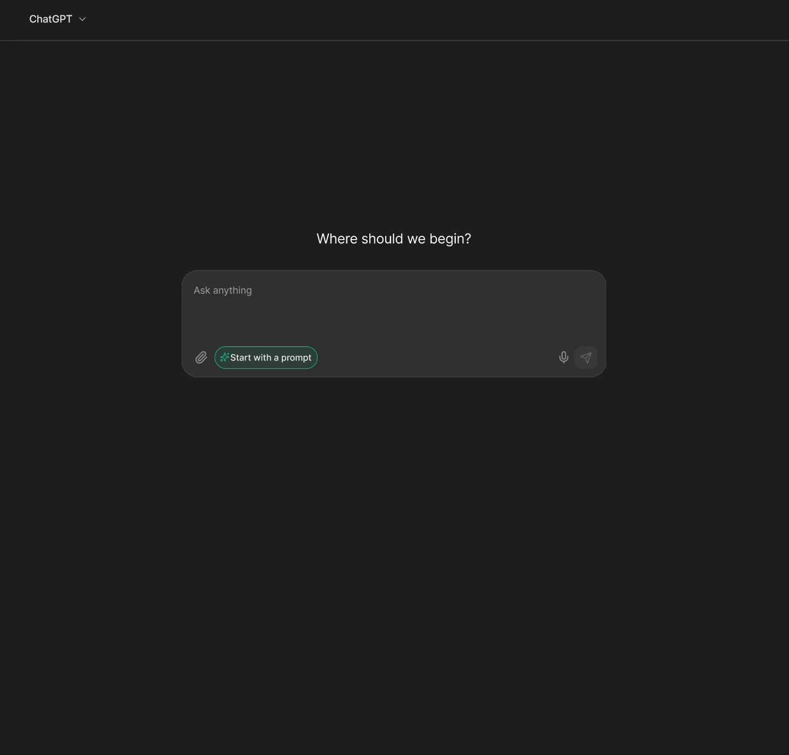
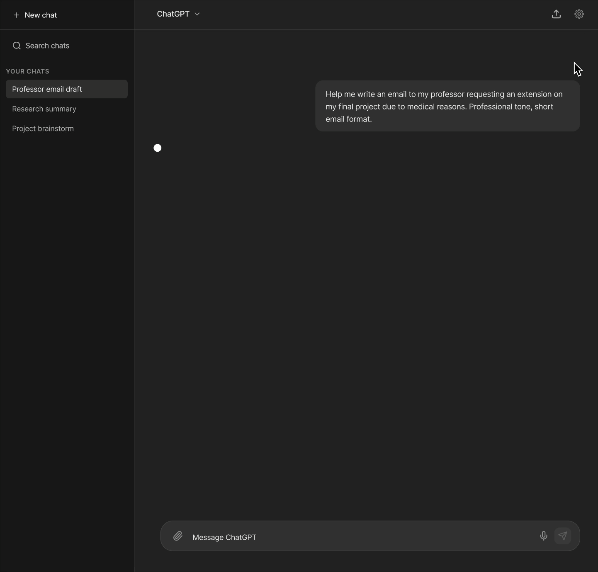
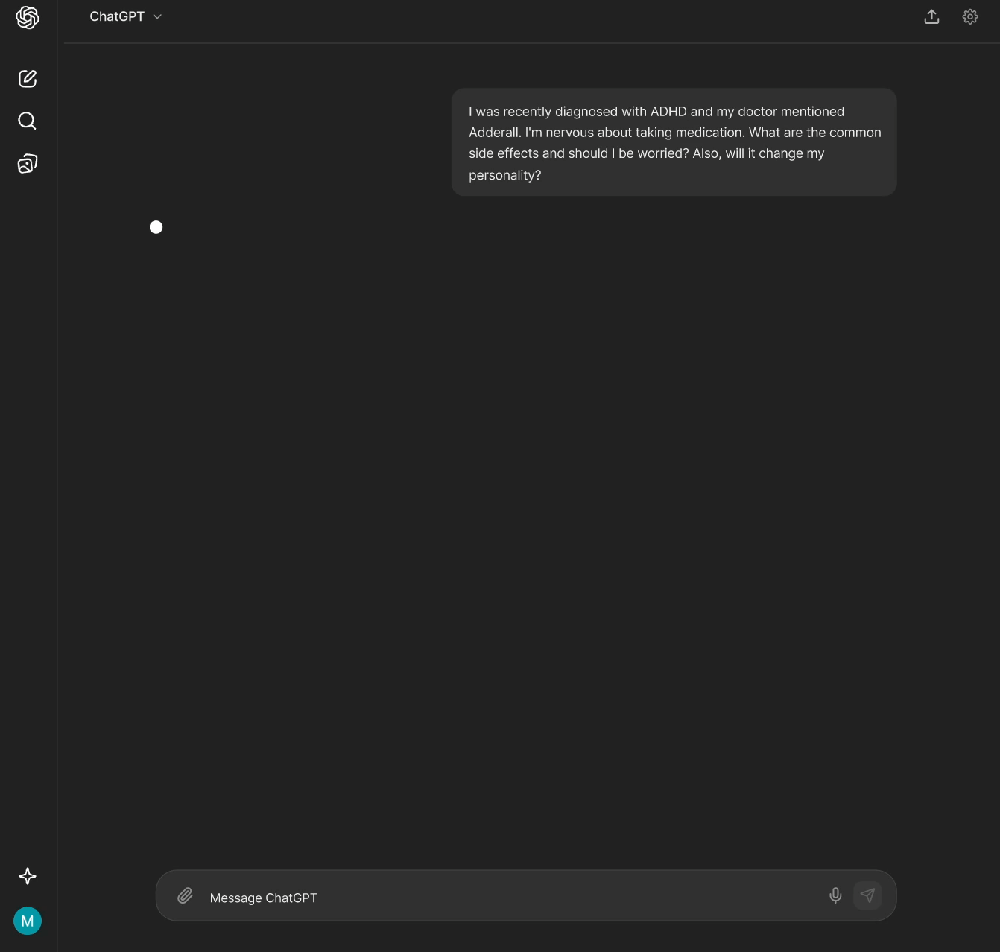
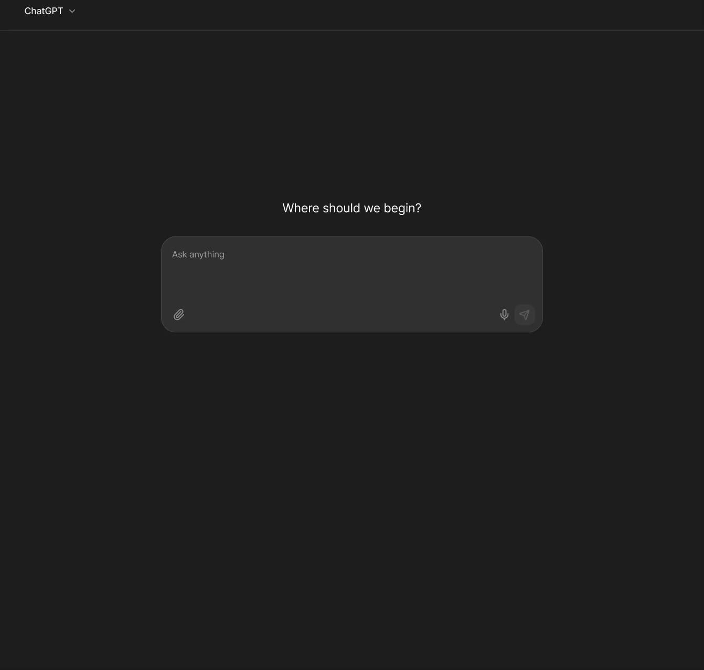

Re-designing ChatGPT for neurodivergent users.

ChatGPT is becoming essential infrastructure. But it wasn't designed for everyone.
LLMs are no longer just tools they're embedded in how people work, learn, and manage daily life. For neurotypical users, that's a productivity boost. For users with ADHD, the same interface can create more friction than it resolves.
This project asked a simple question: is ChatGPT actually accessible for neurodivergent users? We researched the barriers, audited the interface, and proposed four feature redesigns grounded in WCAG guidelines and real user experience research.
ADHD users rely heavily on AI and face the most friction using it.
People with ADHD use ChatGPT specifically to compensate for executive function challenges like breaking down tasks, maintaining focus, and drafting text when words won't come. But the interface was never designed with them in mind.
Cognitive load gap
Neurotypical users get productivity gains. ADHD users expend more effort to achieve the same outcome, the tool that's meant to help adds friction instead.
Two-tiered experience
As AI becomes embedded in education and work, this gap compounds. Missing these accommodations isn't a minor inconvenience it's a structural disadvantage.
No neurodivergent lens
ChatGPT's interface was designed around neurotypical interaction patterns. There's no scaffolding, no output control, and no context anchoring for users who need it.
ChatGPT treats my ADHD like a problem to fix, not something to recognize and work through.
— Glazko et al., 2025Mixed-method research: academic studies, Reddit communities, and a direct interface audit.
We didn't start with assumptions. We triangulated across three sources to understand both what research had documented and what users were actually experiencing in the moment.
Academic literature
Peer-reviewed studies on neurodivergent AI use which gave us systematic evidence of the barriers ADHD users face. These weren't one-off complaints, they were consistent, documented patterns.
Reddit community posts
Subreddits like r/Neurodiversity gave us the emotional anchoring that academic papers miss. Real users describing the frustration in their own words, in real time.
ChatGPT interaction audit
We ran through ChatGPT ourselves using three ADHD-relevant scenarios: drafting a professional email, preparing for an interview, and understanding medication risks. Every friction point was documented against the user quotes from our research.
Four barriers surfaced consistently across every source.
- Difficulty articulating prompts. The blank text box is pure cognitive load. "The words exist, but my brain won't pull them front and center." (Glazko et al., 2025)
- Overwhelming output. Walls of text with no verbosity control. The response might technically answer the question but deliver it in a format that guarantees abandonment.
- Verification and trust burden. No confidence indicators, no source transparency. For high-stakes queries (medical, legal), this is not a minor UX problem.
- Context loss. Long conversations drift. There's no goal anchor, no conversation map, no way to know what the model is "remembering" so users fall into rabbit holes and lose the thread entirely.
Four feature redesigns each mapped directly to a documented barrier.
Every design decision traces back to a specific user quote, a WCAG criterion, and a pattern from our research. Nothing was added speculatively.
Addresses: difficulty articulating prompts

A modular prompt-building interface that structures the request into four cards: Goal, Context, Tone, Format. Only Goal is required and the rest is optional. Users can switch between guided and free-form mode at any time, and save templates for recurring tasks.
The blank input box is one of the highest-friction moments in the current interface. This replaces the "ask me anything" void with scaffolding that meets users where their words aren't.
WCAG criteria: 3.3.5 Help (reduces cognitive effort to produce a clear prompt) and 3.3.3 Error Suggestion (prevents input problems before they occur).
Addresses: information overload

A persistent output settings panel that gives users control over response length (Brief / Standard / Detailed) and format. Every response begins with a TL;DR summary. Content is organized into collapsible section blocks which is closed by default and opened on demand.
[ChatGPT is] too much or not enough information…
— Atcheson et al., 2025The non-deterministic nature of LLMs means output length is always unpredictable. Output Mode gives users a way to set expectations and reduce the cognitive cost of receiving and processing responses.
WCAG criteria: 2.2.2 Pause/Stop/Hide and 3.1.5 Reading Level.
Addresses: trust and accuracy burden

Color coded confidence badges on each response section: High (verified sources), Medium (general consensus), Lower (individual variation), Caution (consult a professional). Sources are linked inline. High-stakes topics (medical, legal) trigger an explicit disclaimer before the response loads.
If I don't have the energy to validate, I could make myself look like a clown.
— Glazko et al., 2025ADHD users reported that the verification burden was one of the most exhausting parts of using ChatGPT. This makes source reliability visible and contextual not something users have to figure out themselves after the fact.
WCAG criteria: 1.3.3 Sensory Characteristics (text + colour, not colour alone) and 3.3.5 Help.
Addresses: context loss and rabbit holes

A persistent right-side panel that tracks: the original goal, current focus, key decisions made during the conversation, a numbered conversation flow with quick-jump links, and an editable "What I'm Remembering" section exposing the model's context. Users can edit what the model holds in memory to redirect the conversation.
It sends me down another rabbit hole…
— Glazko et al., 2025Long conversations drift and for ADHD users, losing the thread isn't a minor annoyance, it's the end of the session. The Context Panel makes the conversation's structure visible and navigable at all times.
WCAG criteria: 2.4.5 Multiple Ways (additional navigation methods) and 3.3.2 Labels or Instructions.
Three tensions we couldn't fully resolve.
Patronizing by design
Features meant to support can feel condescending. Confidence badges that simplify output risk being read as "dumbed down." Opt-in design forces users to self-identify publicly. Default-on design assumes everyone wants these features. Neither is right.
Technical feasibility
Real-time context anchoring and granular verbosity controls would require significant changes to how LLMs process and present information. Some of what we designed assumes backend capabilities that don't currently exist.
Universal design vs. targeted accommodations
Our proposal: make all features universally available with customizable intensity rather than building an "ADHD mode" toggle. Targeted features risk stigma. Universal features risk invisibility. There's no clean answer but universality felt more realistic.
What I learned
The blank text box is a design decision, not a neutral starting point.
"Ask me anything" is a design choice that assumes users arrive knowing what they want to say. For ADHD users and many others that assumption creates immediate friction. Scaffolding isn't hand-holding, it's removing an unnecessary barrier.
Accessibility research needs emotional context, not just clinical data.
The Reddit posts told us things that peer-reviewed papers couldn't like the frustration, the embarrassment, the way users described giving up in their own words. Mixed-method research isn't just more rigorous. It's more honest.
Designing for edge cases usually improves the default experience.
TL;DR summaries, collapsible output, confidence indicators, and conversation structure are features that are not exclusively useful for ADHD users. Every person benefits from less cognitive load. Accessible design is just good design with the volume turned up.